Ships
| Ship | Description |
|---|---|
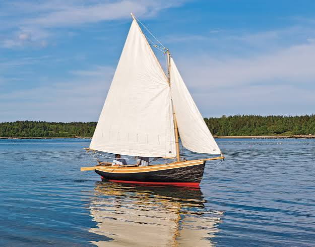 |
The quintessential pirate ship. Small, single-masted, and exceptionally fast, they were easily handled by a smaller crew and perfect for coastal raiding. |
| Sloop | |
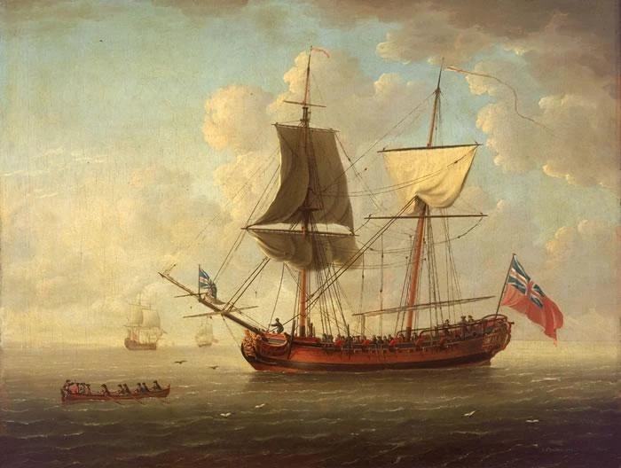 |
A two-masted vessel that combined square sails (for speed) with fore-and-aft sails (for maneuverability). They were larger than sloops and could carry more firepower. |
| Brigantine | |
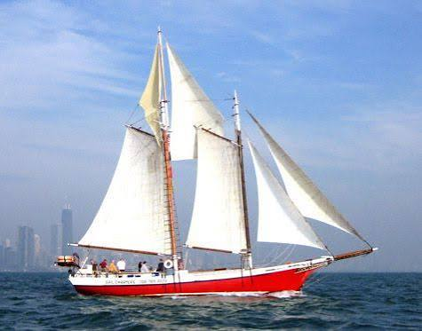 |
Known for their narrow hulls and "schooner rig" (all masts fore-and-aft rigged). They were incredibly fast and popular for their ability to sail close to the wind. |
| Schooner | |
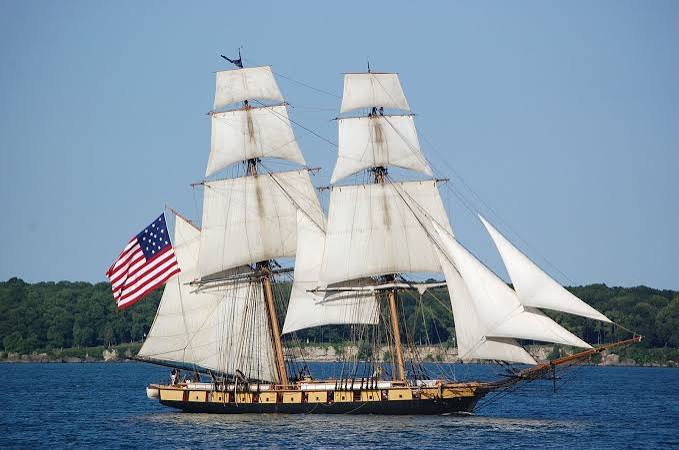 |
A two-masted, square-rigged ship. While larger and less agile than a sloop, they offered significant deck space for cannons and a larger crew, making them formidable in a fight. |
| Brig |
Weapons
Melee Weapons
| Weapon | Description |
|---|---|
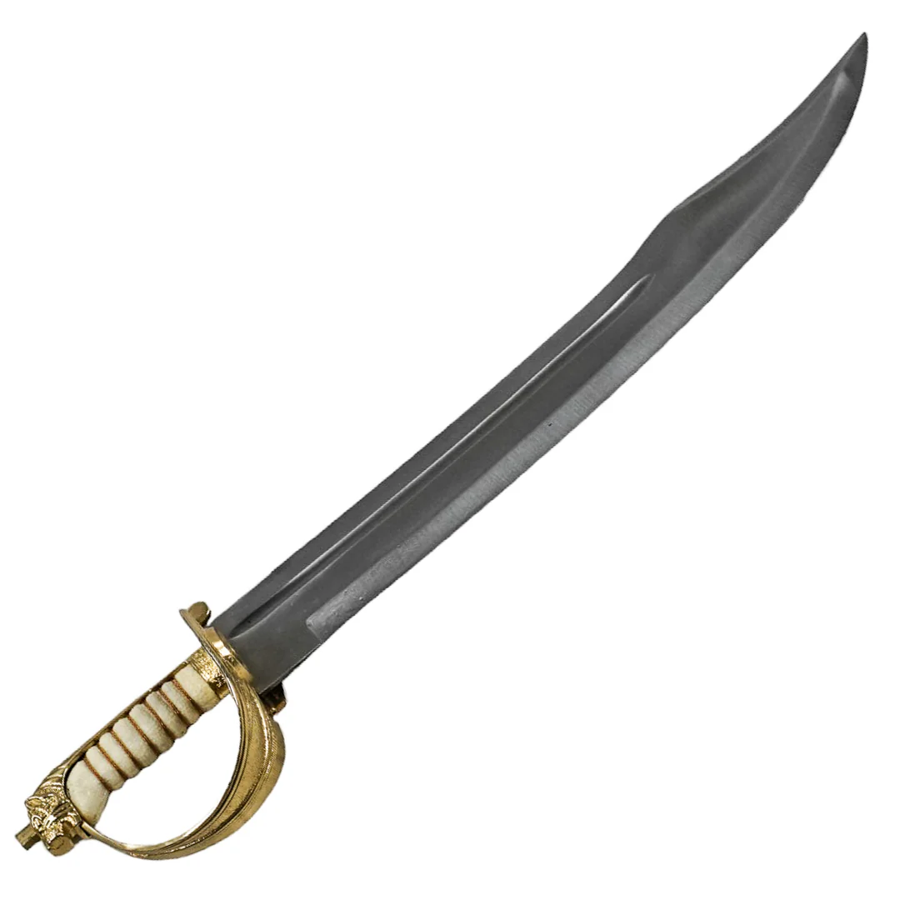 |
The iconic pirate weapon. It was a short, heavy, slightly curved sword with a broad blade. It was rugged, easy to use in the cramped, slippery conditions of a ship's deck, and doubled as a tool for hacking through rope or wood. |
| Cutlass | |
 |
A heavy, blunt weapon designed for breaking down doors and hulls during boarding actions. It was often used in close combat on the ship's deck. |
| Boarding Axe | |
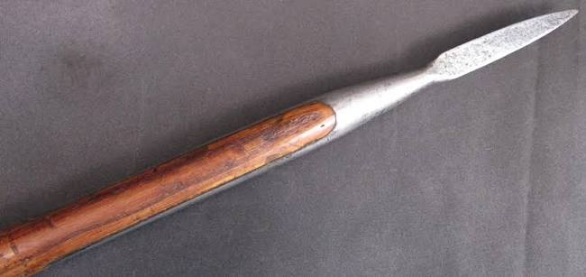 |
A long, spear-like weapon used to keep attackers at bay while boarding or to defend against boarders attempting to climb the ship's side. |
| Boarding Pike |
Firearms
| Weapon | Description |
|---|---|
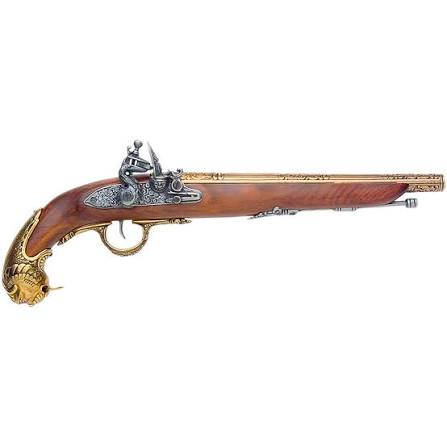 |
The most common firearm among pirates. It was a single-shot, muzzle-loaded pistol that used flint striking steel to ignite the gunpowder. Pirates often carried multiple pistols since reloading was time-consuming. |
| Flintlock Pistol | |
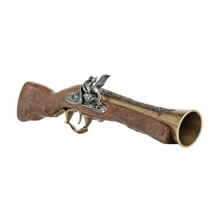 |
A short, wide-barreled firearm that fired a spread of lead balls. It was effective at close range and often used by pirates for its devastating impact. |
| Blunderbuss |
Artillery and Explosives
| Weapon | Description |
|---|---|
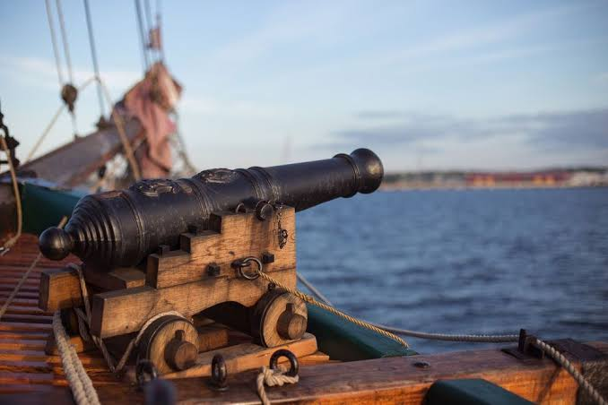 |
A large, heavy firearm mounted on a ship's deck, used to fire cannonballs at enemy vessels. |
| Cannon | |
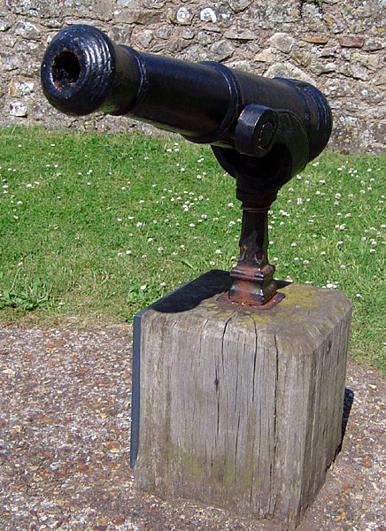 |
A smaller firearm mounted on a swivel, used for close-range defense against boarders or to target specific areas on an enemy ship. |
| Swivel Gun | |
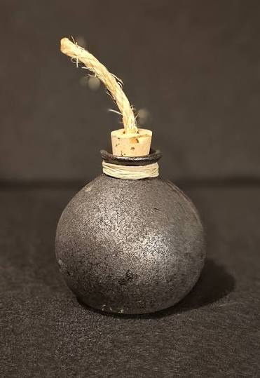 |
Early hand grenades. These were often glass or ceramic bottles filled with gunpowder, scrap metal, and a slow-burning fuse. They were thrown onto enemy decks to create chaos and injury before a boarding party arrived. |
| Granades |